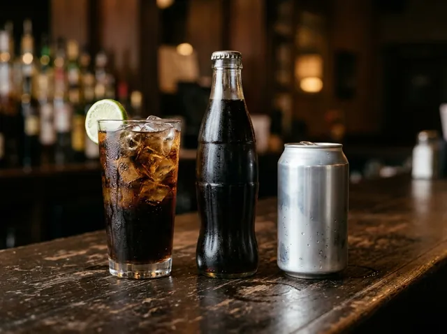

The menu
Every dish and drink, with prices. The menu may change a little before we open.
VegNon-vegVeg or non-vegHeat
Dim Sum & Bao
Hand-folded · dim sum 4 to a basket · bao 2 to a plate
-
Steamer for two · 799
2 baskets of dim sum and a plate of bao, our pick of the day. Best with a Comrade Crisp.
-

Crystal ClearVegetarian
Water chestnut, carrot and edamame folded by hand into a glass-clear wheat-starch skin, steamed to order. 220
Contains: soy, wheat
-

Siu Mai GoodnessNon-vegetarianHeat 1 of 3 Signature
Open-topped siu mai of smoky Goan chouriço and chicken, steamed and finished with housemade chilli oil. 300
Contains: pork, wheat
-

Fire StartersNon-vegetarianHeat 2 of 3
Housemade chicken wontons poached silky, then drowned in our own chilli oil, black vinegar and sesame. 280
Contains: wheat, sesame
-

Prawn to Be WildNon-vegetarian
Plump pink prawn, garlic chives and bamboo shoot in a pleated wheat-starch skin, with chilli-soy. 340
Contains: shellfish, wheat, soy
-

Bao DownNon-vegetarian Signature
Pork belly slow-braised three hours in soy and star anise, seared to order with hoisin and peanut crumb. 320
Contains: pork, peanuts, soy, sesame, wheat
-

Seoul MateVegetarianHeat 1 of 3
Paneer seared hard and glazed sticky-spicy with gochujang, tucked into a soft bun with cucumber and sesame. 260
Contains: milk, soy, sesame, wheat
-

Fever PitchNon-vegetarianHeat 2 of 3
Our crisp Konso Fever chicken with pickled onion and chilli mayo, piled into a soft steamed bun. 280
Contains: egg, soy, wheat
From the Wok
High flame · double-fried · extra chilli · Indo-Chinese house classics and Korean bar food. On most dishes you pick your protein.
-

Konso FeverVeg or non-vegHeat 2 of 3 Bestseller
Double-fried, then tossed on full flame so the green chilli sauce catches and smokes.
paneer 280chicken 320pork belly 360
Contains: egg, soy (pork option: pork)
-

Honey TrapVeg or non-vegHeat 1 of 3
Twice-fried potato fingers or chicken strips, tossed in a sticky honey-chilli glaze with sesame.
Potato 220chicken 320
Contains: egg, sesame
-

Fry HardVegetarianHeat 1 of 3
Crisp fries loaded with housemade kimchi and melted cheese, finished under the torch with gochujang mayo. 240
Contains: milk, egg, soy
-

Wonton MoreVeg or non-vegHeat 1 of 3
Hand-folded wontons fried golden to order, served hot with a sticky sweet chilli dip.
Veg 240chicken 260
Contains: wheat, sesame, soy
-

Salt & PepaVeg or non-vegHeat 1 of 3
Fried crisp in a thin batter, tossed with crushed pepper, fried garlic and green chilli, with kasundi mayo.
Mushroom 260chonak 420prawns 460
Contains: egg, wheat, mustard (chonak: fish; prawns: shellfish)
-

K-Pop WingsNon-vegetarianHeat 1 of 3
Six wings in a potato-starch crust, fried twice for a glass-crisp shell, brushed with soy-garlic or gochujang. 380
Contains: soy, wheat
Soups & Salads
Light, sharp, cold
-

Smash HitVegetarianHeat 1 of 3
Cucumber smashed to order so it soaks up black vinegar, garlic and housemade chilli oil, finished with sesame. 160
Contains: sesame
-

Hot & BotheredVeg or non-vegHeat 2 of 3
Mushroom, bamboo shoot, tofu and silky egg ribbons in a peppery broth finished sharp with black vinegar.
Veg 180chicken 210
Contains: soy, egg
-

Wonton KenobiNon-vegetarian
Our chicken wontons poached and floated in a clear ginger-chicken broth with bok choy and white pepper. 220
Contains: wheat, egg
-

Coconut CuddleVeg or non-vegHeat 1 of 3
Thai coconut broth with galangal, lemongrass and lime leaf, sour and soothing, with mushroom and chilli.
Veg 220chicken 250
-

Slap HappyVegetarianHeat 2 of 3
Green papaya, long beans and peanuts pounded to order in the mortar: sour, sweet, hot and crunchy. 240
Contains: peanuts
Mains
Thai · Burmese · street-style · One big bowl. Add steamed jasmine rice, Plain Jane, 120, to any curry.
-
Konso feast for four
4 soups, Konso Fever chicken, Salt & Pepa chonak, mixed Noodle Around, Green With Envy with rice, darsaan. About 12% under ordering separately. 2,299
-

Noodle AroundVeg or non-vegHeat 1 of 3 Chef’s pick
Thin noodles tossed dry on a high flame, street style, with cabbage, carrot and chilli vinegar.
Veg 240chicken 280mixed 340
Contains: wheat, soy (mixed: egg, shellfish)
-

Rice Rice BabyVeg or non-veg
Day-old rice fried hot with real wok smoke and burnt garlic, every grain separate.
Veg 240chicken 280mixed 320
Contains: soy (chicken and mixed: egg)
-
Gravy TrainVeg or non-vegHeat 2 of 3
A hot, glossy chilli-garlic gravy with crisp-fried veg or chicken, made to spoon over fried rice.
Veg 260chicken 300
Contains: soy, wheat
-
Sweet TalkVeg or non-vegHeat 1 of 3
A sticky sweet-chilli gravy with peppers and onion and crisp paneer or chicken: the gentle, tangy one for fried rice.
Paneer 260chicken 300
Contains: soy, wheat (paneer: milk)
-

Green With EnvyVeg or non-vegHeat 2 of 3
Thai green curry from paste pounded in house, simmered gently in coconut milk with aubergine and basil.
Veg 300chicken 340prawn 440
Contains: (prawn option: shellfish)
-

Holy Basil, Batman!Non-vegetarianHeat 2 of 3
Minced chicken with holy basil from our courtyard, bird’s-eye chilli and a runny fried egg over rice. 320
Contains: egg, soy
-

Suey GenerisVeg or non-vegHeat 1 of 3
A Burmese coconut-curry noodle bowl, built your way with crispy noodles, fried onion, lime and chilli.
Veg 320chicken 360
Contains: egg, wheat
-

Plain JaneVegetarian
Steamed jasmine rice, fragrant and plain, for the curries. 120
-
Bowl Game · lunch, 12 to 4
Any noodles or fried rice + Konso Fever chicken 440, or paneer 380, or a green curry with rice 360.
Something Sweet
End on a high
-

Honey, I Shrunk the NoodlesVegetarian Our dessert
Flat noodles fried crisp, tossed in hot honey and sesame, with a scoop of vanilla ice cream. 220
Contains: milk, wheat, sesame
-

Sticky SituationVegetarian
Steamed sticky rice soaked in warm salted coconut cream and palm jaggery, poured over ice cream. 220
Contains: milk, sesame
-

Scoop There It IsVegetarian
Two scoops of vanilla, tender coconut or kokum, with warm palm jaggery syrup, sesame-peanut crunch or chocolate. 150
Contains: milk, peanuts, sesame
-

Brewed Coffee
Single-estate Indian arabica, filter-brewed in small batches through the day, black or with hot milk.
Black 120with milk 140
-

Irish Coffee
Brewed coffee, Jameson, brown sugar and lightly whipped cold cream: our one hot cocktail, sweet and spiked. 360
Contains: milk
Beer
Cold bottles · craft from up the coast
-
Happy hour 12 to 6
Kings 330 ml 99 (usually 120) Budweiser 330 ml 149 (usually 180)
-
Craft, in the bottle Goa
Four bottles from up the coast and beyond, poured into a glass at the table: a crisp rice lager, a pink kokum gose, an IPA and a vanilla porter.
-

Kings
The coast’s own cult pilsner, crisp and a little malty, served ice-cold.
330 ml 120650 ml 180
Contains: gluten
-

Budweiser
The easy American classic: light, clean and gently sweet, served ice-cold.
330 ml 180650 ml 260
Contains: gluten
-
Corona Extra
Light, crisp Mexican lager, served ice-cold with a wedge of lime in the neck. 320
Contains: gluten
-
Hoegaarden
Belgian wheat beer, cloudy and soft, brewed with coriander and orange peel: a long, easy summer drink. 340
Contains: gluten (wheat, barley)
-

Comrade Crisp
People’s Lager, a crisp rice lager from a small farm-to-barrel brewery in Sangolda: the beach beer. 260
Contains: gluten
-

Gose Bumps
Susegado kokum gose, tart, salty and pink, soured with kokum from our own coast. Try this first. 300
Contains: gluten
-

Eight Finger Eddie IPA
A hoppy, bitter-orange IPA for people who like their beer to talk back. 320
Contains: gluten
-
Vanilla Porter
Susegado porter, dark and smooth, with roasted malt and a soft vanilla finish. 320
Contains: gluten, milk (lactose)
-
Bucket of Five
Five ice-cold bottles in an ice bucket for the table.
Kings 330 ml 499Budweiser 330 ml 749
Contains: gluten
Cocktails
Feni · kokum · soju · lemongrass
-

Kokum Feni Sour Goa
Cashew feni from Goa shaken hard with kokum, lime and aquafaba for a silky pink foam, served up. 420
-

Pink Panchayat
Coconut feni and housemade lemongrass syrup built over ice and topped with soda: long, easy, and the vote is unanimous. 380
-

Tingle All The Way
Gin and tonic built tall with grapefruit, finished with Sichuan pepper for a gentle, tingling hum. 420
-

Yak Attack
Soju, Yakult and fresh lime shaken over ice: sweet, tangy and dangerously easy, a Seoul bar classic. 420
Contains: milk
-

Kimchi Mary
Vodka, tomato and housemade kimchi brine rolled between tins to keep it smooth, with a gochugaru rim. Brunch with a bite. 420
Contains: ask us (kimchi brine)
-

Lychee Lemon-Gras
Vodka, lychee, lemongrass and lime, shaken hard, double-strained and crowned with a whole lychee. 440
-

Tam-Tam Margarita
Agave spirit, tamarind and lime shaken and served on the rocks with a chilli-salt rim. 460
-

Somaek Bomb
A shot of soju dropped into a cold lager. Shout “Geonbae!” or it doesn’t count. 360
Contains: gluten
Zero Proof
Pressed and brewed in house
-

Fresh Lime Soda
Limes pressed to order with soda, sweet or salted: the table standard. 120
-

Kokum Soda
Kokum and black salt over soda, the coast’s salty-sour pink summer cooler. 140
-

Lemongrass-Ginger Iced Tea
Black tea brewed in house with lemongrass and ginger, then chilled and served over ice. 160
-

Tonic or Ginger Ale
Indian tonic or ginger ale, over ice. 120
-

Soft Drinks
Coke, Diet Coke, Thums Up or Sprite, chilled. 80
-

Water
Still or sparkling, chilled.
Still 1 L 60sparkling 330 ml 120